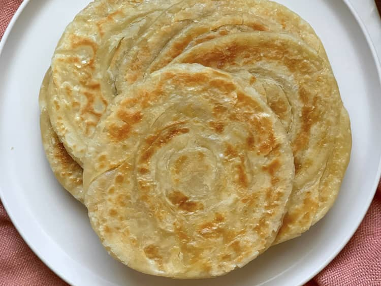

Parathas

Paratha is a flaky, layered flatbread that is a staple in South Asian cuisine, particularly enjoyed in Bangladesh, India, and Pakistan. Made from whole wheat flour, the dough is rolled out, layered with ghee or oil, folded, and rolled again to create its characteristic layers. Cooked on a hot griddle, parathas turn golden and crispy while remaining soft inside. They are versatile and can be served plain or stuffed with fillings like potatoes, paneer, or lentils, making them a perfect accompaniment to curries or a delicious standalone dish.
Paratha is a versatile flatbread with a crispy, flaky texture, perfect for pairing with curries or enjoyed plain. Its buttery layers are achieved through folding and frying, making it a favorite in South Asian cuisine.
Ingredients
- 1.5 cups of all-purpose flour
- 0.5 cup of whole wheat flour
- 1 teaspoon salt
- 1 tablespoon melted butter
- 0.5 teaspoon sugar
- 3/4 cup water
- oil for frying
Steps
- Mix all-purpose flour and whole wheat flour in a bowl. Sprinkle salt on top. Add butter, sugar, garlic powder, and dried herbs. Mix together with your fingers. Pour water in gradually; continue to mix by hand until a soft dough is formed.
- Knead dough until smooth and elastic, about 7 minutes. Cover with a damp cloth; let rest for 30 minutes.
- Divide dough into 8 equal portions. Shape into smooth balls; lightly flatten. Dust with flour and roll into thin circles about 1/16-inch thick and 7 inches in diameter.
- Heat oil in a large saucepan over medium heat. Fry each dough circle until golden, about 2 minutes per side. Drain on paper towels.